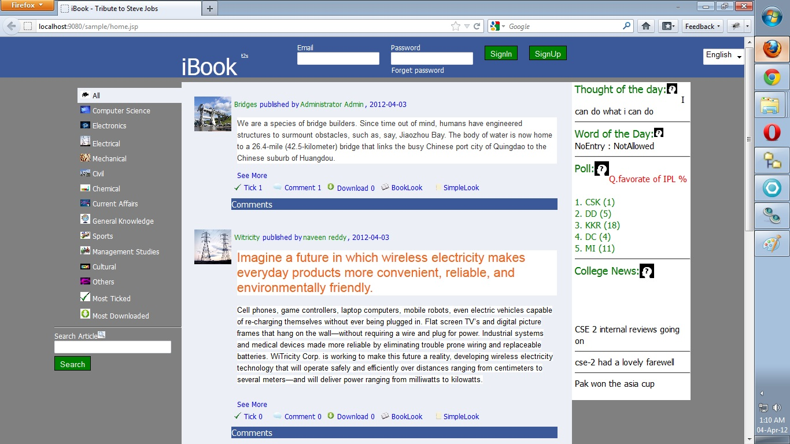
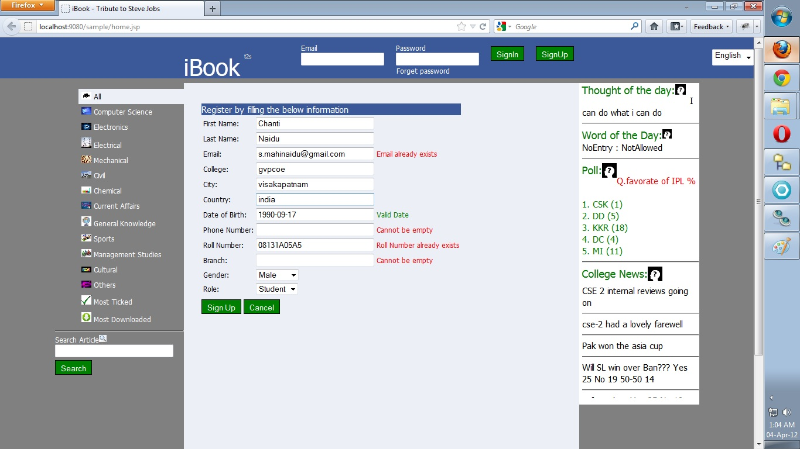

A Guest is any one who navigates to the landing page of iBook Online College Magazine.
d
Guest can only view and download the articles. He can use the BookLook and simplelook options to view the article in various views. He can search and filter articles by using the various options and Search Bar provided on the landing Page. He can see the various news,poll, thought and word of the day displayed on the home page.
A guest can also use the local language option(Telugu).
A Guest can signup if he is new or he can sign in if he already registered.
